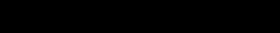

12. P'i / Standstill [Stagnation]
- above CH'IEN THE CREATIVE, HEAVEN
- below K'UN THE RECEPTIVE, EARTH
THE JUDGMENT
STANDSTILL. Evil people do not further The perseverance of the superior man. The great departs; the small approaches.
THE IMAGE
Heaven and earth do not unite: The image of STANDSTILL. Thus the superior man falls back upon his inner worth In order to escape the difficulties. He does not permit himself to be honored with revenue.